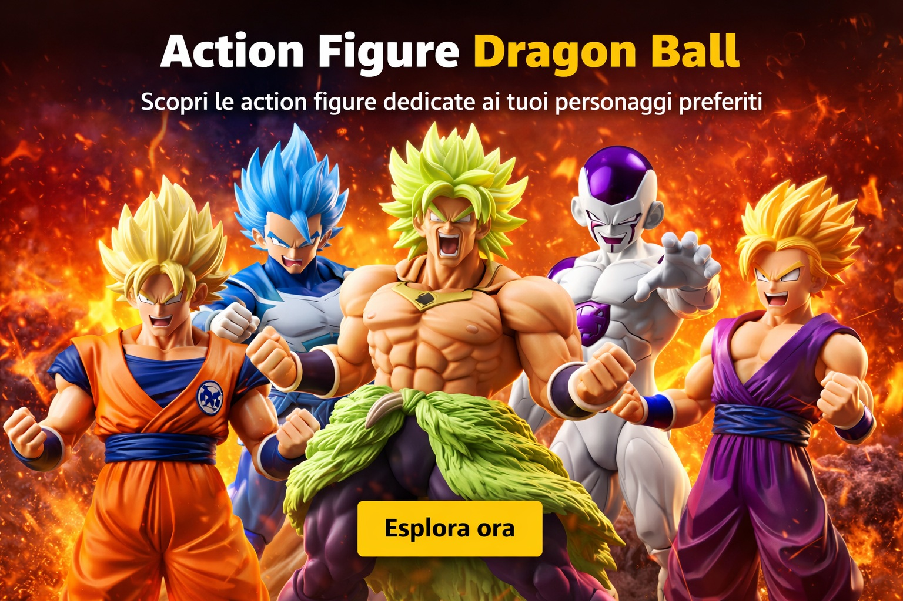
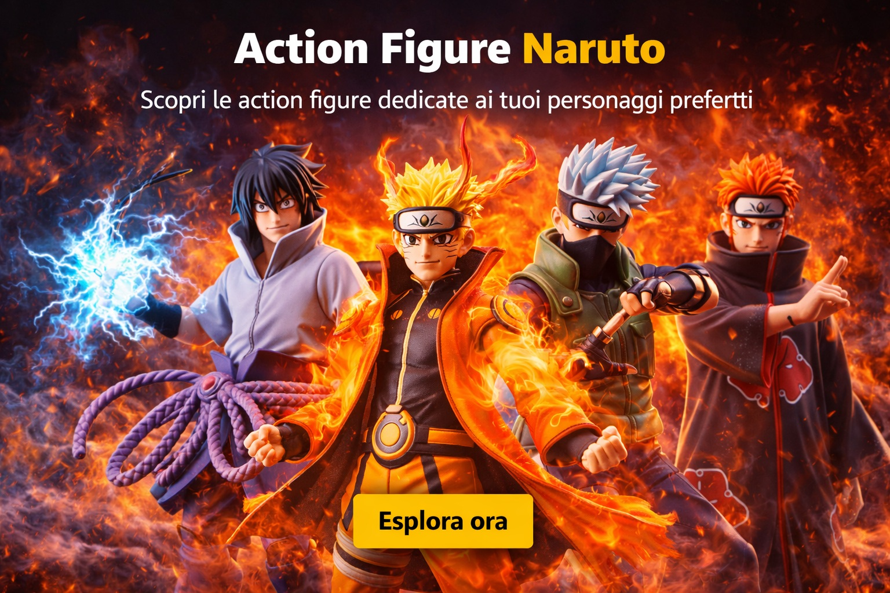
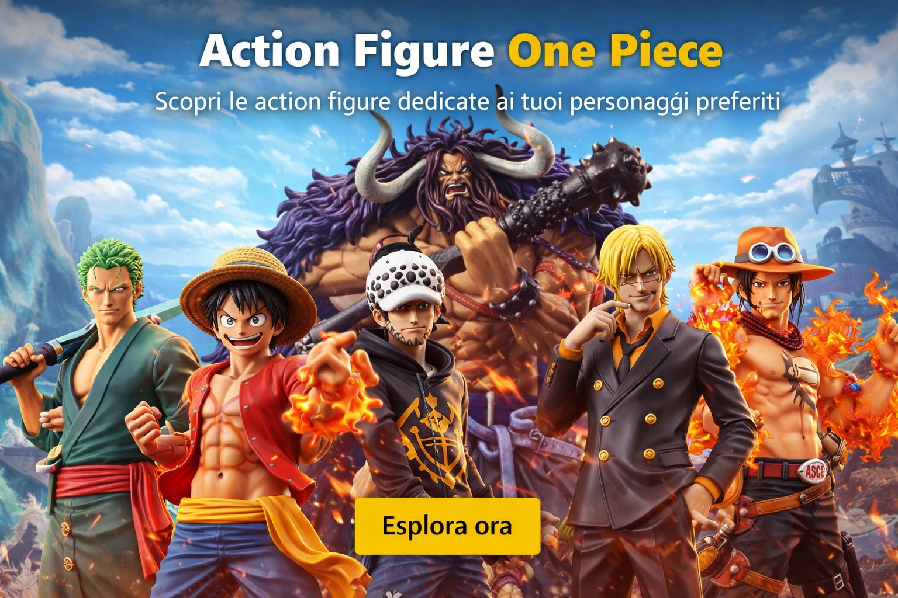

Se ami Dragon Ball e vuoi scoprire nuove figure da aggiungere alla tua collezione, qui trovi una selezione dedicata ai personaggi e alle trasformazioni più iconiche della saga. Da Goku Super Saiyan a Vegeta, da Broly a Frieza, passando per fusioni, versioni limitate e scene leggendarie, puoi esplorare action figure ispirate a Dragon Ball Z, Dragon Ball Super e Dragon Ball GT. Un punto di partenza ideale per vedere modelli diversi, confrontare stili e trovare le figure che meglio rappresentano il tuo personaggio preferito.
Action figure Dragonball

Per chi segue Naruto da anni, questa raccolta riunisce action figure dedicate ai personaggi, ai clan e ai momenti più memorabili della serie. Puoi esplorare modelli di Naruto, Sasuke, Kakashi, Itachi, Madara e molti altri, incluse versioni Akatsuki, Hokage, modalità eremitica, Kurama Chakra Mode e scene tratte da Naruto Shippuden. Un modo semplice per vedere figure diverse, confrontare dettagli, pose e collezioni dedicate all’universo ninja.
Action figure Naruto

Se One Piece è una delle tue serie preferite, qui puoi scoprire action figure dedicate ai personaggi più iconici e alle saghe che hanno segnato il viaggio della ciurma di Cappello di Paglia. Da Luffy e Zoro fino a Shanks, Trafalgar Law, Ace e Kaido, trovi modelli ispirati a Wano, Marineford, Enies Lobby, Dressrosa e molte altre ambientazioni. Una selezione utile per esplorare pose, stili e versioni diverse dei protagonisti più amati dell’universo di One Piece.
Action figure One Piece